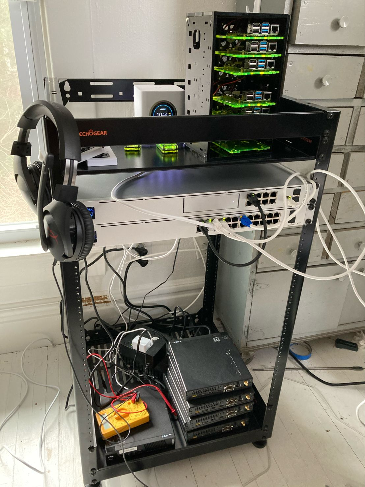

It ain’t pretty yet but it’s a start and it’s been mostly fun so far!
I say mostly fun because running cables in a home from 1914 is a pain in the behind. A lot of plaster and lath walls makes it a challenge and though I haven't had to mess with it too much, I've been doing some planning after getting this equipment and woooooo it will be a hard fight with this old house.
Equipment pictured above:
Unifi Dream Machine Pro
Unifi PoE switch
AmpliFi HD Mesh
Echogear 20u open rack
Currently using AmpliFi to create a mesh while I wait for access points for the UDM Pro. Then I’ll just use it as a backup and store it, or see if I can set it up for my daughter's apartment.
You can also see my stack of ThinkCenter tinys and my Raspberry Pi cluster. I actually plan to rack the Raspberry Pis with a mount I found made for them (either 1u for three or 3u for sideways mounting around 12-15). Not sure how I’m going to arrange the ThinkCenters yet.
You can also see my tiny little pihole dns servers in their neon green cases. I love the Pi Zero form factor.
In case I didn’t bring it up before the raspberry pi 4s are for a Kubernetes cluster which will be for continuous learning and experiments, but also to run some custom apps I’m building for my home. And the ThinkCenters are for a Proxmox cluster for vms, experiments, etc.